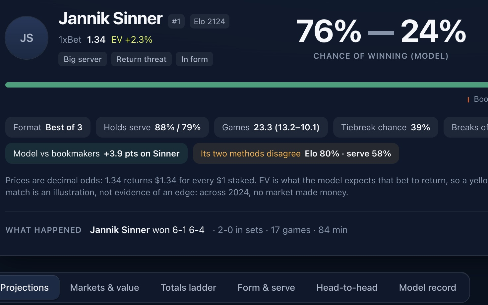
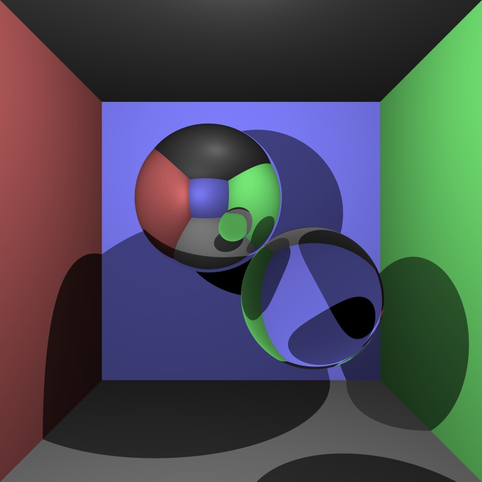
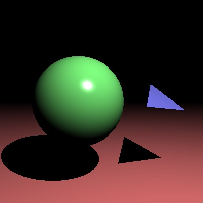

Order 01Machine learning

A program that turns a 3D scene into a realistic image. It follows rays of light as they travel and bounce, and works out the lighting, shadows and colour from what they hit.


 C#
C#Order 03Graphics
Start with a single sphere and one light before adding anything else. If the shadows come out speckled, nudge each shadow ray slightly off the surface before firing it, so it does not hit the point it started from. Rendering is slow, so test on a small image first.
Order 01Machine learning

Order 02Mobile


Order 04Developer tools